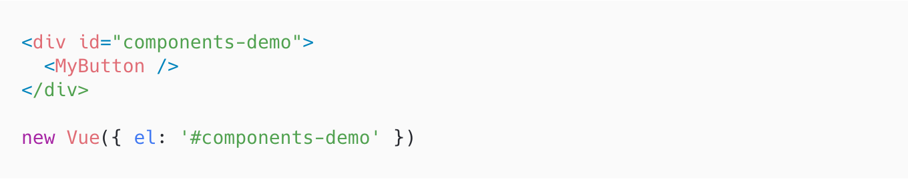

Vue Component
Components are single, independent units of an interface. They can have their own state, markup and style. Since components are reusable Vue instances, they accept the same options as new Vue, such as data, computed, watch, methods, and lifecycle hooks. The only exceptions are a few root-specific options like el.
Here’s an example of a Vue component:
We can use this component as a custom element inside a root Vue instance created with new Vue
Components can be reused as many times as you want.
<MyButton />
<MyButton />
<MyButton />
When we defined the <MyButton /> component, you may have noticed that data wasn’t directly provided an object, like this:
data: {
count: 0
}
Instead, a component’s data option must be a function, so that each instance can maintain an independent copy of the returned data object:
data: function() {
return { count: 0 }
}